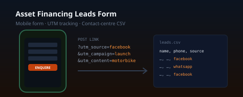

Asset Financing Leads Form
A mobile-friendly enquiry form for social-media posts about the bank's asset-financing product. Each submission is saved to a CSV the contact centre can open in Excel, tagged with the post it came from.
Summary Overview
This system belongs to AB Bank Zambia, so it is described here in words only —
no code, screenshots or data from the bank are published. The demo is my own rebuild for a fictional lender.

What it does
- A single, fast mobile form — no framework, and Node 18 with no other dependencies on the server.
- Campaign tracking: each social post links to the form with UTM tags, which land in the Source, Campaign and Content columns, so marketing can see which post produced which lead.
- Server-side validation and a hidden honeypot field against spam.
Built for compliance
The lead file holds personal data, so the hand-over notes are as important as the code: host it on the bank's own infrastructure over HTTPS, restrict the file to authorised contact-centre staff, agree a retention period, and have the consent wording reviewed by the Data Protection Officer before go-live.